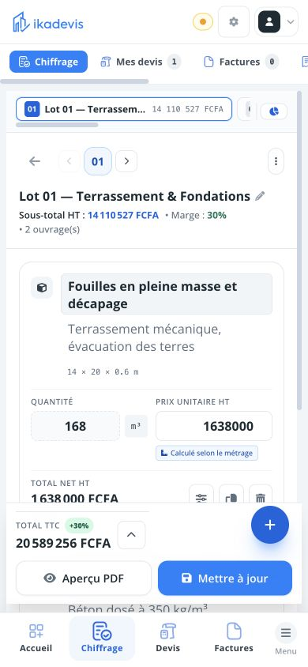
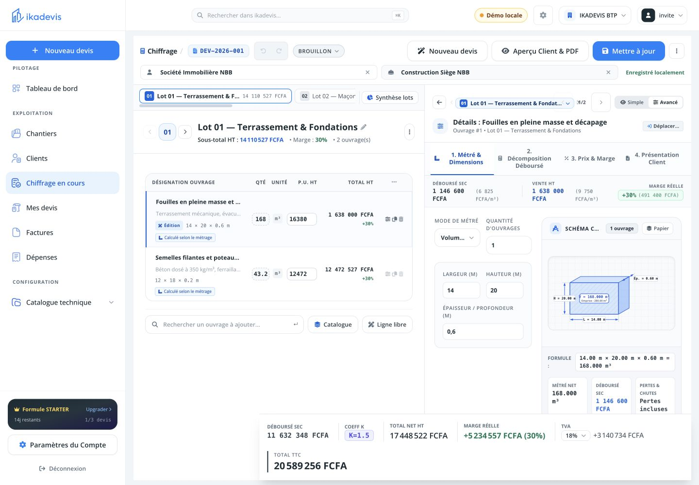

Les constats à traiter en premier
P0 • Confiance dans le prix1. Le prix unitaire affiché ne correspond pas à celui de l’aperçu
Observé : pour les fouilles de 168 m³, le champ « Prix unitaire HT » affiche 1 638 000 FCFA, soit le total de la ligne. L’aperçu client indique bien 9 750 FCFA/m³ et un total de 1 638 000 FCFA. Sur ordinateur, le champ est si étroit que sa valeur est en plus coupée.
Impact : l’entrepreneur peut prendre un montant global pour un prix au m³ et hésiter à modifier son devis. Le mauvais affichage est confirmé ; son effet lors d’une modification n’a pas été testé.
Correction : une même source pour quantité, unité, PU et total dans toutes les vues. Afficher « 168 m³ × 9 750 F = 1 638 000 F ». Séparer explicitement « Prix calculé » et « Prix personnalisé ».
Acceptation : liste mobile, tableau desktop, inspecteur et PDF affichent le même PU ; modifier une quantité conserve la bonne relation PU × quantité, avec les règles d’arrondi de la devise.

05 — comparer « Prix unitaire HT » et « Total net HT ».
09 — l’inspecteur donne 9 750 FCFA/m³ ; le tableau présente un autre montant.2. Le même ouvrage passe de 30 % à 33 % selon le mode
Observé : mode simple : coût 1 092 000 F, marge 546 000 F / 33 %. Mode avancé : coût 1 146 600 F, marge 491 400 F / 30 %. Le prix de vente reste 1 638 000 F.
Lecture du code local : le mode simple utilise le déboursé sans frais généraux. Le calcul métier distingue le déboursé et le coût de revient avec frais. L’écart observé est de 54 600 F, soit 5 % du déboursé. Cela explique la différence, mais les deux vues emploient « marge réelle » sans préciser la base.
Correction : montrer « Coûts directs », « Frais généraux », « Coût de revient » et « Marge après frais ». Utiliser le même calcul partagé dans les deux modes. Le mode avancé appelle également « Déboursé sec » un montant qui inclut ici les frais : corriger ce libellé.
Risque supplémentaire dans le code : le mode simple plafonne la marge minimale à zéro avec Math.max(0, …). Une perte pourrait être masquée ; ce scénario reste à reproduire. Accepter et afficher une marge négative est un test indispensable.
P1 • État du dossier3. « Approuvé » dans la liste, « Brouillon » dans le détail
Les deux statuts sont visibles simultanément pour DEV-2026-001, après ouverture de l’aperçu depuis le chiffrage. Capture 10. Cela peut faire douter de la version consultée et de l’action à effectuer ensuite.
Correction : harmoniser la source du statut entre document enregistré et brouillon de travail. Si deux versions existent, afficher « Modification non enregistrée d’un devis approuvé », avec des actions explicites. Reproduire le cas hors démo avant de conclure à un défaut touchant tous les comptes.
P1 • Pilotage4. Le tableau de bord appelle « réalisé » un montant de devis
Le tableau annonce 20 589 256 F réalisés et un objectif atteint, tout en indiquant zéro facture émise. Le code local fait varier la base entre factures, devis acceptés, puis total chiffré. Capture 13.
Correction : distinguer « Devis proposés », « Devis acceptés », « Facturé » et « Encaissé ». Définir une base stable pour chaque objectif et préciser HT ou TTC. Sur la fiche chantier, remplacer « CA cumulé » par le montant réellement mesuré : par exemple « Total des devis rattachés ». Il s’agit ici de clarté produit, pas d’un audit comptable.
P1 • Smartphone5. Trop de navigation autour de la tâche
L’en-tête, la navigation horizontale, les lots, les onglets de l’inspecteur, les totaux et la navigation basse se superposent. Les blocs globaux fixes occupent environ un tiers de la hauteur du téléphone, avant même les commandes du lot. 06, 08.
Correction : une navigation globale basse ; supprimer sa duplication horizontale. Pendant l’édition d’un ouvrage, ouvrir un écran dédié avec retour, titre et bouton « Terminer ». Garder un résumé compact du montant et déplier le calcul à la demande. La bibliothèque plein écran donne déjà une bonne direction. 23.
P1 • Smartphone6. L’aperçu expose les commandes avant le devis
Client, statut, modification, PDF, destinataire, conversion, révision, modèle, duplication et suppression précèdent le document. Celui-ci ne commence qu’en bas du premier écran. Le choix du niveau de détail se trouve dans une zone horizontale défilante. Capture 11.
Correction : un en-tête compact, le document immédiatement après, puis une barre « Modifier · PDF · Envoyer ». Placer révision, modèle, duplication et suppression dans « Autres actions ». Rendre « Client / Étude interne » visible sans défilement horizontal. Présenter « Créer une facture » selon l’état du devis et le contexte métier.
P1 • Positionnement BTP7. Le catalogue ne reflète pas encore l’ordre des travaux
Le premier ouvrage proposé est un panneau avec autocollant, puis un habillage ACM. Le filtre BTP existe dans la bibliothèque mais il est hors de la première portion visible sur smartphone. Le catalogue de configuration ouvre directement le détail d’un panneau dans le parcours observé. 17, 18, 23.
Correction : proposer d’abord Terrassement → Fondations → Structure → Maçonnerie → Second œuvre → Finitions. Conserver menuiserie, métallerie, façades et signalétique comme familles spécialisées. Donner priorité aux ouvrages adaptés au lot courant, sans masquer les autres. Permettre deux lignes pour les noms et regrouper les icônes secondaires dans un menu.
P1 • Accessibilité et saisie8. Plusieurs champs n’ont pas de nom accessible
Dans l’inspecteur, les libellés visibles des champs numériques ne sont pas reliés aux champs inspectés. Dans la bibliothèque, les cases de sélection examinées n’ont ni libellé associé ni aria-label. 06, 23. Un lecteur d’écran peut annoncer un champ ou une case sans expliquer sa fonction.
Correction : associer chaque libellé au champ, nommer « Sélectionner [ouvrage] », lier unités et erreurs avec une description accessible. Prévoir des cibles tactiles confortables autour de 44–48 px, des valeurs lisibles, un focus visible et le clavier décimal approprié. Ces tailles sont une recommandation ergonomique, pas une conclusion de conformité WCAG.
À distinguer : des boutons ont déjà de bons noms accessibles et un lien d’évitement existe. Contrastes, lecteur d’écran, navigation clavier complète et clavier virtuel réel restent à vérifier.
P2 • Prise en main9. La prochaine action mérite plus de place
Sur l’accueil mobile, l’objectif commercial précède « Nouveau devis ». Le devis vierge montre un lot vide mais demande d’entrer dans ce lot avant de proposer l’ajout d’ouvrage. Factures et dépenses consacrent beaucoup d’espace aux indicateurs à zéro. 12, 15, 16, 21.
Correction : en tête d’accueil, « Reprendre mon devis » et « Nouveau devis », puis les actions à faire. Dans un devis vide : « Ajouter mon premier ouvrage ». Dans un module vide : une explication, une action principale et les prérequis ; développer les indicateurs une fois les premières données présentes. À l’entrée depuis un bouton d’essai, présenter clairement la création de compte ou la démo.
P2 • Cohérence et finition10. Un même objet porte trop de noms
« Catalogue », « Ouvrages & Recettes », « Bibliothèque » et « Catalogue technique » se recoupent. Des catégories affichent MATERIAL / LABOR. Le menu mobile porte le titre « Recommandations de menu burger ». La saisie des fouilles utilise « Volume Béton » et des axes « largeur / hauteur » peu naturels pour longueur × largeur × profondeur. 08, 17, 19.
Correction : adopter « Ouvrages », « Matériaux et main-d’œuvre », « Menu », « Personnalisation des documents ». Adapter les dimensions au type de travaux. Réserver les formules et la configuration technique au mode avancé. Renommer « Mettre à jour » en « Enregistrer les modifications » et afficher clairement « Enregistré sur cet appareil » ou « Synchronisé » selon la situation réelle.
Périmètre et limites de preuve
Testé : navigation dans app.ikadevis.com, mode « Essayer sans compte », données locales de démonstration ; accès, accueil, chiffrage, bibliothèque, aperçu client, chantier, clients, états vides des factures et dépenses, menu. Un devis vierge de démo a été ouvert pour examiner l’ajout ; aucune facture réelle, envoi client ou transaction effectué.
Non testé : compte authentifié, collaboration, permissions, abonnement/paiement, gestion complète des factures et dépenses, réglages, édition de modèles, génération effective du fichier PDF, synchronisation hors ligne, gros volumes et connexions lentes. Le responsive a été simulé dans le navigateur ; aucun clavier iOS/Android réel, appareil physique ou test utilisateur n’a été utilisé. Ce rapport ne certifie ni l’accessibilité ni l’ensemble du moteur de calcul.
Code consulté : index_jsx.js, notamment lignes 4664 et 4905 (PU), 5864–5867 (marge simple), 20462–20466 (frais généraux), 22329–22332 (objectif), 29684–29703 (menu). Le code local peut différer du déploiement ; il éclaire les causes probables, tandis que les captures attestent les comportements visibles.